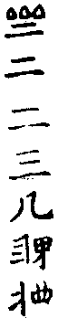

禪宗頌古聮珠通集卷第二十 赤六
潭州石霜椘圓慈眀禪師(嗣汾陽)僧問如何是佛師曰水出高原師自。
頌曰。
水出高原也大奇禪人不會眼麻彌若也未眀泥水句燈籠露柱笑嘻嘻慈眀為水出高原天下禪僧走似烟只[聽-王]清聲來耳畔不知流落那峯前(正覺逸)
衝斷雲根迸石來泠泠千古下崔嵬未明的的朝宗意[聽-王]取春深動地雷(溈山秀)
高原水出曉晴天對荅臨機豈偶然衲子不知流落處一尋寒木破溪烟(地藏恩)
穿雲迸石不辭勞天抵還他出處高溪澗豈能留淂住終歸大海作波濤(雪岩欽)
水出高原浪拍天四維上下絕塵烟分眀好個真消息未必時人到那邊(高峯妙)
慈眀室中插劒一口以草鞋一緉水一盆置劒邊每見入室即曰看看有至劒邊擬議者師曰嶮喪身失命了也便喝出。
頌曰。
暑往寒來春復秋夕陽西去水東流將軍戰馬令何在野草閑花滿地愁(瞎堂遠)
四五百條花柳巷二三千處管絃樓縱然有搭閑田地不是栽花蹴氣毬([仁-二+幻]堂仁)
家山指出路非遙萬仞嵯峨插碧霄一片白雲橫谷口幾多歸鳥盡迷巢(水菴一)
單鎗疋馬出汾陽端的還他主將強盆水草鞋橫室內殺人更不犯鋒鋩(無際[泳-永+(瓜-、)])
百花藂裏鐙鞭過俊逸風流有許多未苐儒生偷眼覷滿懷無柰舊愁何(斷橋倫)
慈明在眾中時到芝和尚寮中芝坐問開合子取香在手中欲燒次師問曰作麼生燒芝便放爐中燒師曰齖郎當漢又恁麼去也。
千人萬人行一路幾箇移身不移步對靣拈香爐上燒齖即當漢又恁去(白雲端)
頌曰。
銀蟾出海照無私處處分眀是阿誰見靣不須重問訊從教日炙與風吹(高峯妙)
慈眀冬日牓僧堂作此字其下注曰若人識得不離四威儀中首座見曰和尚今日放參師聞而笑。
頌曰。
選佛堂前光燄燄分眀一柄道士劒果然堂頭放晚參首座之言有神見(野雲南)
頌曰。
枕袋安眠淂自由任他人物閙啾啾麄衣糲食尤無念誰管扶桑日出頭(海印信)
頌曰。
不動尊提不起茫茫宇宙誰能委秋江清夜月澄鮮鷺鷥飛入蘆花裏(高峯妙)
頌曰。
老倒慈眀為指迷釣[糸*系]紋水出群機時人貪看蘆花白不見沙鷗隔岸飛(石田薰)
慈眀問楊岐馬祖見讓師便悟去且道迷却在甚麼處歧云要悟即易要迷即難。
頌曰。
要悟即易要迷即難[糸*系]毫透不盡咫尺隔千山說食終不飽著衣方免寒憶昔五臺曾有語前三三與後三三(圓悟勤)
衲僧悟易要迷難無限漁翁失釣竿點銕成金猶自可點金成銕太無端(別峯印)
慈眀因李駙馬問我聞西河有金毛師子是不師曰駙馬甚處得這消息來李喝一喝師曰野千鳴李又喝師曰師子吼。
頌曰。
逆風吹又順風吹銕眼銅睛孰敢窺萬古碧潭空界月再三撈摝始應知(高峯妙)
慈眀問顯英上座近離甚處曰金鑾師曰夏在甚處曰金鑾師曰去夏在甚處曰金鑾師曰前夏在甚處曰金鑾師曰先前夏在甚處曰何不領話師曰我也不能勘得你教庫下奴子勘你且點一盞茶與你濕觜。
頌曰。
焦磚打著連底凍赤眼撞著火柴頭將軍但有嘉聲在何必榮封萬戶侯(石田熏)
慈眀頌黑黑黑道道道明眀眀得得淂。
頌曰。
八十翁翁著綉靴[跍-十+水]開幽洞笑呵呵傍人指點忘歸路不覺腰間爛斧柯(無菴全)
頌曰。
滁州瑯琊山慧覺禪師(嗣汾陽)上堂汝等諸人在我這裏過夏與你點出五般病一不得向萬里無寸草處去二不淂孤峯獨宿三不得張弓架箭四不得物外安身五不得滯於生殺何故一處有滯自救難為五處若通方名導師汝等諸人若到諸方遇明眼作者與我通個消息貴得祖風不墜若是常徒即便寢息何故躶形國裏諸服餙想君太煞不知時。
頌曰。
曲蟺[跍-十+水]著兩頭摮啞子得夢自家笑笑到天眀說向誰烏鴉解作麒麟呌(正堂辯)
瑯琊指出五般病舉世良醫發藥難直下為君俱擊碎延齡何必九還丹(少室睦)
瑯琊因長水法師問經云清淨本然云何忽生山河大地師厲聲曰清淨本然云何忽山河大地。
頌曰。
混混玲瓏無背靣拈起有時成兩片且從依舊却相當免被傍人來覷見(白雲端)
當明不犯體全彰進步剛然要論量妍醜只因逢古鏡回頭滿面負慚惶(大洪遂)
相罵饒接觜相唾饒潑水塵舉大地收花開世界起一模脫出絕功勛句裏挨開大施門(圓悟勤)
因風吹火徒為妙借手行拳未足多清淨本然隨口道忽生大地與山河(佛鑑懃)
清淨本然云何忽生山河大地大小瑯琊禪師借人鼻孔出氣出得氣有巴臂昨夜那吒生八臂(南堂興)
不設陷穽不揮雪刃一箭穿楊神目不瞬反思昔日李將軍射虎之機猶是鈍(虗堂愚)
頌曰。
鋸解秤鎚無縫鑪風吹日炙朝復夜雖然不許亂啇量一任稱提繞天下(白雲端)
鋸解秤鎚星飛電轉左拽右拽七片八片有時落地礙人行千眼大悲看不見(佛慧泉)
鋸解秤鎚渾似鐵大愚老子曾饒舌水流澗下太忙生雲在嶺頭閑不徹(鼓山珪)
手把金鞭擊銕牛大千世界任遨遊恒沙岸上相逢著默識無言自點頭(保寧勇)
頌曰。
殺活全機覿靣提大家相聚喫莖虀後生不省這箇意只管茫茫打野榸(松源岳)
苦中樂樂中苦大唐打鼓新羅舞寒山燒火滿頭灰却笑豐干倒騎虎(石菴玿)
硬如綿軟似鐵諸人飲水須防噎堪笑灘頭老大愚至今弄巧反成拙(枯禪鏡)
舒州法華院全舉禪師(嗣汾陽)到瑯琊覺和尚處琊問近離甚處師曰兩浙曰船來陸來師曰船來曰船在甚處師曰步下曰不涉程途一句作麼生道師以坐具摵一摵曰杜撰長老如麻似粟拂袖而出琊問侍者此是甚麼人者曰舉上座琊曰莫是舉師叔麼先師教我尋見伊遂下旦過問上座莫是舉師叔麼莫恠適來相觸忤師便喝復問長老何時到汾陽琊曰某時到師曰我在浙江早聞你名元來見解秪如此何得名播寰宇琊遂作禮曰某甲罪過。
頌曰。
奪得驪珠即便回小根魔子盡疑猜拈來拋向洪波裏撒手大家歸去來(徑山杲)
漁翁瀟洒任東西蘆管橫吹韻不齊夜靜月眀魚不食扁舟臥入武陵溪(夢菴信)
水不洗水金不博金昧毛色而得馬靡[糸*系]絃而樂琴結繩畫卦有許事喪盡真淳盤古心(心聞賁)
官路無人獨自行自家公驗甚分眀路傍偷販私塩客草裏蹲身過一生(皷山珪)
有主有賔有禮有樂得失是非如何摸索纔摸索無上醍醐成毒藥君不見大鵬展翼蓋十洲投窓之物空啾啾(石菴玿)
揭天犪皷噪紅塵遍地刀鎗解出身結角羅紋隨處入銀山銕壁是通津(伊菴權)
頌曰。
洞庭湖裏失却舡赤脚波斯水底眠盡大地人呼不起春風吹入杏花村(雪菴瑾)
南岳芭蕉菴大道谷泉禪師(嗣汾陽)省同參慈眀眀問白雲橫谷口道人何處來師左右顧視曰夜來何處火燒出古人墳眀曰未在更道師作虎聲明以坐具便撼師接住推眀置禪床上眀却作虎聲師大笑曰我見七十餘員善知識今日始遇作家。
頌曰。
問如緜裏針荅似泥中刺咆哮二虎吼生濘各各利牙爪可怖坐却碧峯頭截斷當陽路直饒擎出祕魔叉路狹草深難進步相見不相逢回[一/ㄠ]不回[一/ㄠ]四七二三眼相覩雲從龍兮風從虎(冶父川)
兩陣交鋒出戰時旗鎗倒卓皷無槌[糸*系]毫不犯將軍令獨腳機関各自提(瞎堂遠)
一文一武偶相逢說盡英雄各不同俱往長安朝聖主姓名終是達天聦(虗堂愚)
頌曰。
聖僧黑漆實希奇莫把丹青點汙伊合掌燒香人不敬寒山拾得笑攢眉(海印信)
舒州浮山法遠圓鑑禪師(嗣葉縣省)僧問如何是祖師西來意師曰平地起骨堆。
頌曰。
浮山遠因僧問師唱誰家曲宗風嗣阿誰師曰八十翁翁輥綉毬曰與麼則一句逈然開祖胄三玄科甲振苐林師曰李陵元是漢朝臣投子青云水深魚穩葉落巢踈。
頌曰。
頌曰。
宋內翰楊文公億(參廣慧璉)公字大年出守汝州首謁廣慧慧接見公便問布皷當軒擊誰是知音者慧曰來風深辨公曰恁麼則禪客相逢秪彈指也曰君子可八公應喏喏曰草賊大敗夜語次慧曰秘監曾與甚人道話來公曰某曾問雲岩諒監寺兩箇大蟲相咬時如何諒曰一合相某曰我秪管看未審恁麼道還得麼曰這裏即不然公曰請和尚別一轉語慧以手作拽鼻勢曰這畜生更[跳-兆+孛]跳在公於言下脫然無疑有偈曰八角磨盤空裏走金毛師子變作狗擬欲將身北斗藏應須合掌南辰後。
頌曰。
內翰攀南斗倚北辰廣慧轉天関反地軸寥寥千古許誰知斷絃須是鸞膠續(石岩璉)
楊文公問廣慧承和尚有言一切罪業因財寶所生勸人踈於財寶而况閻浮提眾生以財為命邦國以財聚人教中有財法二施何得勸人踈於財慧曰旛竿頭上銕籠頭公曰海壇馬子似馿大慧曰楚鷄不是丹山鳳公曰佛滅二千年比丘少慚愧。
頌曰。
夜叉頭菩薩靣鬼擣穀佛跳墻同門共戶不相識邁古超今無寸長燈心[翟*支]破石人脚扁鵲盧醫爭主張(或菴體)
一人牙如劒樹一人口似血盆一拳還一踢一踢報一拳亞竪摩醯頂門眼不妨親[跍-十+水]上頭關(石菴玿)
巧笑倩兮羙目眄兮素以為絢兮夫是之謂大年翁與廣慧師也(寶葉源)
楊文公問慈眀如何是上座為人一句慈曰切公曰長裙媳婦拖泥走慈曰誰得似學士公曰作家作家慈曰放你三十棒公以手拍膝曰這裏是甚所在慈拍手曰也不得放過公呵呵大笑。
頌曰。
風和日暖正春濃柳色如金花影重入到桃源舊遊處一層峯鎻一層峯(栢庭永)
南康軍雲居曉舜禪師時號舜老夫(嗣洞山聦)自洞山如武昌行乞首謁劉公居士家士高行為時所敬意所與奪莫不從之師時年少不知其飽叅頗易之士曰老漢有一問若相契即開疏如不契即請還山遂問古鏡未磨時如何師曰黑似漆曰磨後如何師曰照天照地士長揖曰且請上人還山拂袖入宅師懡[怡-台+羅]還洞山山問其故師具言其事山曰你問我我與你道師理前問山曰此去漢陽不遠師進後語山曰黃鶴樓前鸚鵡洲師於言下大悟機鋒不可觸。
頌曰。
黑雲當午蔽清虛白雨翻空失畫圖雨過雲[(冰-水+〡)*ㄆ]山色淨趙州東壁掛葫蘆(伊菴權)
黃鶴樓前鸚鵡洲雲居意不在鈎頭扁舟穩泛長江淥大笑一聲烟雨收(銕牛印)
荊門軍玉泉承皓禪師時稱皓布裩(嗣北塔廣)冬至上堂晷運推移布裩赫赤莫恠不洗無來換替。
頌曰。
越州天衣義懷禪師(嗣雪竇)赴杉山請初入院上堂二十年前樂慕此山今日且喜因緣際會山僧未到此山身先到此山及乎到未杉山却在山僧身內。
頌曰。
移身換步老天衣不惜眉毛幾個知今日若眀當日事江南日暖鷓鴣啼(慈受深)
天衣因僧問古鏡未磨時如何師曰撑天拄地曰磨後如何師曰夕陽影裏快藏身。
頌曰。
拄地撑天全體用夕陽影裏不藏身有時獨坐孤峯頂寂寂猶聞落葉頻(松源岳)
天衣上堂鴈過長空影沉寒水鴈無遺踪之意水無留影之心若能如是方解向異類中行不用續鳬截鶴夷岳盈壑放行也百醜千拙収來也攣攣拳拳用之敢與八大龍王闘富不用都來不直半分錢參。
頌曰。
鴻鳴高貼冷雲飛影落寒江不自知江水無情鴈無意行於異類亦如斯(本覺一)
長空孤鴈一聲秋獻寶波斯鼻似鈎風捲白雲歸別嶂黃昏月掛柳梢頭(萬菴柔)
天衣舉金剛經云若見諸相非相即見如來法眼云若見諸相非相即不見如來師曰若見諸相非相眼在什麼處此語有兩負門。
頌曰。
諸相非相孰能諳見與不見要須參兩處負門如透徹此時方得覩瞿曇(本覺一)
頌曰。
天衣示眾曰百骸俱潰散一物鎮長靈百骸潰散皆歸土一物長靈甚處安。
頌曰。
一物長靈甚處安長空雲散碧天寬蓮宮佛剎花無[婁*殳]貶起眉毛子細觀(南堂興)
頌曰。
骨瘦皮枯衣服穿夜深屋破看星眠頂門不具迦羅眼莫問西來諸祖禪(本覺一)
頌曰。
要個無禪底國師纔涉毫芒便取誅堪笑這僧垂手處道無便見有偏枯(月林觀)
舒州投子義青禪師(嗣大陽玄)僧問和尚適來拈香祝延聖壽且道當今皇帝壽年多少師曰月籠丹桂遠星拱北辰高。
頌曰。
六國清平賀聖年珠簾高捲月明前金輪那肯當堂座不用丹墀擊靜鞭(丹霞淳)
投子青因僧問師唱誰家曲宗風嗣阿誰師曰威音前一箭射透兩重山云如何是相付底事師曰今因淮地月淂照郢陽春云恁麼則入水見長人師曰秪知荊玉異那辯椘王心隨後以拂子敲禪床。
珊瑚枝上玉花開風透清香遍九垓勿謂乾坤成委曲韶陽曾見睦州來(丹霞淳)
杭州慧曰永明延壽智覺禪師(嗣韶國師)僧問如何是永明妙旨師曰更添香著曰謝師指示師曰且喜沒交涉僧禮拜師示偈曰欲識永明旨門前一湖水日照光明生風來波浪起。
頌曰。
門前湖水鏡容開對靣和盤託出來可是永明無剩語酒濃初不在多杯(象潭泳)
智覺因二僧來叅師問叅頭曰曾到此間不曰曾到又問第二上座曰曾到此間不曰不曾到師曰一淂一失少頃侍者問適來二僧未審那個得那個失師曰你曾識這二僧也無者曰不識師曰同坑無異土。
頌曰。
到與不到一得一失不是砒霜便是石蜜舌端無眼如何喫侍者剛要詢端的莫恠同坑無異土閃電未收轟霹靂(癡絕冲)
杭州九曲觀音院慶祥禪師(嗣韶國師)僧問險惡道中以何為津梁師曰以此為津梁曰如何是此師曰築著汝鼻孔。
頌曰。
隆興府黃龍慧南禪師(嗣慈明圓)室中常問僧曰人人盡有生緣上座生緣在何處正當問荅交鋒却復伸手曰我手何似佛手又問諸方叅請宗師所淂却復垂脚曰我脚何似驢腳三十餘年示此三問學者莫有契其旨脫有酧者師未嘗可否樷林目之為黃龍三関廬山圓通旻古佛云昔見廣辯首座收南禪師親筆三關頌諷誦無遺近見諸方傳錄不全又多訛舛故茲注出 我手佛手兼舉禪人直下薦取不動干戈道出當處超佛越祖我脚驢脚並行步步[跍-十+水]著無生會淂雲收電卷方知此道縱橫生緣有語人皆識水母何曾離得蝦但見日頭東畔上誰能更喫趙州茶復緫。
頌曰。
生緣斷處伸驢脚馿脚伸時佛手開為報五湖叅學者三關一一透將來長江雲散水滔滔忽爾狂風浪便高不識漁家玄妙意偏於浪裏颭風濤南海波斯入大唐有人別寶便啇量或時遇賤或時貴日到西峯影漸長黃龍老和尚有箇三緣語山僧承嗣伊今日為君舉為君舉猫兒偏觧捉老鼠(景福順三)
佛手纔開古鑑眀森羅無得隱纖形朝朝日日東邊出多少行人問丙丁驢脚伸時動地輪大洋海底播紅塵唯餘庭際青青栢一度年來一度春垂問生緣何處來到家禪客絕纖埃毗盧剎海周游也休說峨嵋與五臺(照覺緫三)
我手何似佛手反覆誰辨好醜若非師子之兒野干謾為開口我脚何似驢脚隱顯千差萬錯欲開金剛眼睛看取目前善惡人人盡有生緣處認著依前還失路長空雲散月華開東西南北從君去(真淨文三)
我手佛手誰人不有分明直用何須狂走我脚馿脚高低[跍-十+水]著雨過苔青雲開日爍問我生緣處生緣處不疑語直心無病誰論是與非(溈山秀三)
東京法雲惟白佛國禪師熙寧初至南師法席殆二年師歸圓寂然入師室問師道而師以平生三轉語示天下學徒得叩于左右近[婁*殳]見印行語錄者其間或拈或頌罔測其旨噫去世未三十年謬妄者傳習若此良可傷哉因而成頌知師者可同味焉。
頌曰。
主賔相見展家風問荅分眀箭拄鋒伸手問君如佛手銕関金鎻万千重徧參知識扣玄微偶尓相逢話道奇我脚伸為驢脚問平生見處又生疑莫恠相逢不相識宗師須是辨來端鄉関風月俱論盡却問生緣道却難
我手何似佛手天上人間希有直饒緫不恁麼也似枷上著杻我脚何似馿脚奉為衲僧拈却昔年有病未痊如今又遭毒藥若問生緣真俗氣生緣斷處墮無為二途不涉如何也八十婆婆學畫眉(海印信三)
我手佛手十八十九雲散月圓癡人夜走我脚驢脚放過一著龐老笊籬清平木杓人人生緣北律南禪道吾舞笏苹亭撑船(湛堂凖三)
玄關將多意氣手不執寸銕兵不用一騎八蠻與四夷太平皆坐致困臥桑陰春日斜騰騰不識今何世(普融平)
我手何似佛手從來有衫無袖有時閒向人前不覺露出雙肘我脚何似馿脚寒來須要機著莫教[跍-十+水]著泥水和鞋一時失却人人有箇生緣何須盡要梁原若問老僧生處荔枝香滿南園(上方益三)
我手何似佛手爐鞴鉗鎚銕帚曾烹紫磨金軀光射七星牛斗我脚何似馿脚白刃紅旗閃爍坐斷百戰塲中妙闘六韜三畧人人有箇生緣視[聽-王]俯仰折旋頂戴寰中日月手握閫外威權(南堂興三)
我手何似佛手隨分拈花折柳忽然摸著蛇頭未免遭他一口我脚何似馿脚趙州石橋畧彴忽若築起皮毬崩倒三山五岳人人有箇生緣蹲身無地鑽研若也眼皮迸綻慮他桶底別穿(圓悟勤三)
佛手馿脚生緣黃龍元無此語直饒恁麼知之我儂未敢輕許奉報四海禪人第一不得錯舉(龍門遠)
佛手馿脚生緣落處便是乾坤重重無限樓閣彈指入者無門馿脚生緣佛手打透上頭關捩脫却泥水布裩直下心空及苐生緣佛手馿脚為君一體拈却坦然坐致太平猛將謾誇謀畧(佛心才三)
扣關豈是丈夫兒馿脚生緣問阿誰佛手展開無處用太平基業各豐滋(道塲如)
我手何似佛手天上南辰北斗我脚何似馿脚徃事都來忘却人人盡有生緣箇箇足方頂圓大愚灘頭立處孤月影射深灣會不得見還難一曲漁歌下遠灘(白楊順)
我手何似佛手黃龍鼻下無口當時所見顢頇至今百拙千醜我脚何似驢脚文殊親見無著好箇玻璃茶盞不要當面諱却人人有箇生緣從來罪過彌天不是牽犂拽杷便是鼎鑊油煎(正堂辯三)
我手何似佛手天下衲僧無口縱饒撩起便行也是鬼[宋-木+屈]裏走諱不得我脚何似馿脚又被[米*离]膠粘著反身直上兜率天已自遭他老鼠藥吐不得人人有箇生緣銕圍山下幾千年三灾燒到四禪天者漢猶自在傍邊殺淂工夫(張無盡三)
我手何似佛手堪笑紫湖養狗撞著焦尾大蟲性命輸他一口我脚何似馿脚擬議知君大錯進前欲飲醍醐已是遭他毒藥人人盡有生緣且非夷狄中原鎮府出大蘿蔔趙州親見南泉佛手驢脚生緣生緣驢脚佛手李公醉倒街頭元是張公喫酒黃龍山裏老婆禪恰似河陽新婦醜(石菴玿四)
我手何似佛手二八恰恰十九年尾筭到年頭家內一錢無有我脚何似驢脚[跍-十+水]著趙州畧彴驚得迦葉皺眉文殊却打無著人人有箇生緣男兒氣宇衝天若是爭田競地我即喚死如眠佛手驢脚生緣浩浩樷林盛傳直饒一穿穿却未免十万八千(伊菴權四)
我手何似佛手合掌靣南看北斗兔推眀月上千峯引得寒山開笑口我脚何似驢脚急走歸家日將落自古長安如鏡平無端醉倒黃番綽人人有箇生緣且非東土與西天擊珊瑚樹枝枝好撒水銀珠顆顆圓佛手驢脚生緣南海波斯泛銕船精金羙玉團堆賣畢竟何曾直一錢(雪菴瑾四)
佛手驢脚容易見最難道處是生緣黃梅不是周家子七嵗傳衣便會禪(橫川珙)
黃龍南初叅泐潭澄因雲峯恱指見慈眀既寓福嚴時賢禪師命掌書記賢歸寂適慈明繼席一日造室眀曰書記參雲門禪必善其旨如放洞山三頓棒是合喫不合喫師曰合喫眀曰從朝至暮鴉鳴鵲噪皆應喫棒乃使拜之復問趙州道臺山婆子我與汝勘破了也且阿那裏是他勘破婆子處師汗下不能荅眀日又詣室明嘔罵不已師曰罵豈慈悲法施耶明曰你作罵會那師始大悟述頌曰傑出樷林老趙州老婆勘破有來由如今四海清如鏡行人莫與路為讎眀頷之。
頌曰。
錯錯戲海獰龍冲霄遼鶴老慈眀無著莫笑裏重重露拴索佛手一展日月昏大江從此風濤惡(石林鞏)
死水如何養活龍終歸大海鼓腥風天教一霎風雲便送出臺山烟雨中有喫棒分無喫分當爐一煆汞銀流不因[跍-十+水]斷臺山路千古雲峯恨莫酬(竹屋蕳二)
黃龍南因僧問不去不來時如何師曰華岳三峯頭倒卓曰却去却來時如何師曰風吹柳絮毛毬輥。
頌曰。
冰雪肌膚西舍女梳粧巧巧畫雙眉傍人筆力強傳寫戶外如何見得伊(本寂觀)
黃龍南住黃蘗時室中每舉鍾樓上念讚床脚下種菜眾皆下語不契一日勝首座云猛虎當路坐師乃退黃蘗與勝住。
頌曰。
鍾樓上念讚床脚下種菜猛虎當路蹲時人俱不會黃蘗花開自有時眀州有箇憨布袋(照堂一)
黃龍南因禾山普叅普善經論兩川號為義虎問師云阿難問迦葉世尊傳金襴外更傳何物因緣意旨如何師曰上人出蜀曾到玉泉不普曰曾到師又問曾掛搭不曰一夕便發師曰智者道場關王打供結緣住幾時何妨普良久再理前問師俛首普趨出大驚曰兩川義虎不消此老一唾。
頌曰。
黃龍一唾絕遲疑笑殺旁觀又可悲姹女已歸霄漢去獃即猶向火邊棲(遯菴演)
袁州楊岐方會禪師(嗣慈明)僧問如何是佛師曰三脚馿子弄蹄行曰莫只這便是師曰湖南長老。
頌曰。
三脚馿子弄蹄行奉勸行人著眼睛草裏見他須喪命只緣踢[跍-十+水]最分眀(白雲端)
前步高兮後步低動頭搖尾三隻蹄騎過閙市人東西湖南更有須菩提(保寧勇)
三脚馿子弄蹄行騏驥追風趂不前[跍-十+水]破化城無覔處湖南長老重加鞭(佛鑑懃)
三脚驢子弄蹄行步步蓮花襯足生堪笑草中尋覔者不知芳樹囀春鶯(佛性泰)
三脚馿兒忒殺好長放後園教喫草等閒牽去向人前踢倒湖南瞎長老(鼓山珪)
三脚馿子弄蹄行直透威音万丈坑雲在嶺頭閒不徹水流澗下太忙生湖南長老誰觧會行人更在青山外(梁山遠)
三脚馿子弄蹄行兩淛江南秋復熱西北風霜怯早寒閉門愁見楊花落(卍菴顏)
一拽把二牽犂平田淺地且相隨恰到飢時無草料放開頭角便東西老楊岐老楊岐盡道從來解弄蹄(上方益)
蹇馿三脚弄蹄時若不親騎也不知紫磨金容駞不動竹篦端勝冷鉗鎚(典牛游)
法出姦生垜生招箭三脚馿子是誰親見若親見釋迦老子那吒靣(佛照光)
三脚馿子弄蹄行皷動清風入骨寒[跍-十+水]破毗盧光影斷不須平地起波瀾(月菴果)
楊岐一頭馿眼光如電爍[跍-十+水]殺天下人說甚三隻脚(雪菴慶)
一箭射落天邊鴈千人万人著眼看不知此箭自何來湖南長老何曾見(中菴空)
頌曰。
天高地逈非難見水闊山重不易論万古八風吹不入西天人不會唐言(白雲端)
西天人不會唐言端坐巍巍少室前剛被流支打齒缺至今有理不能宣(佛性泰)
西天人不會唐言旱地雷聲徹大千九年靣壁無人會玉兔金烏火裏旋(無菴全)
楊岐因慈眀忌辰設齋眾纔集師於真前以兩手捏拳安頭上以坐具畫一畫打一圓相便燒香退身三步作女人拜首座曰休捏恠師曰首座作麼生座曰和尚休捏恠師曰兔子喫牛妳(苐二座亦如是師近)前作[聽-王]勢座擬議師與一掌曰這漆桶也亂作。
頌曰。
楊岐[聽-王]勢印千差今古令人愛作家但握祖師三印在不妨捏恠亂如麻(圭堂居士)
一棚傀儡木雕成半是神形半鬼形歌鼓歇時天未曉尚餘寒月掛踈櫺(虛堂愚)
頌曰。
堯舜垂衣万國賔撥雲見日意休陳東方來者東方坐草木重霑雨露新(白雲端)
楊岐因慈眀上堂師出問幽鳥語喃喃辤雲入亂峯時如何眀曰我行荒草裏汝又入深村師曰官不容鍼更借一問眀便喝師曰好喝眀又喝師亦喝眀連喝兩喝師禮拜眀曰此事是箇人方能擔荷師拂袖便行。
頌曰。
將出驪珠遇大啇金盤撥動有餘光無煩一句論高價把手歸家笑幾塲(白雲端)
試問人間有底忙好將春事報春光直饒日日花前醉一季都來九十場(正堂辯)
胡張三背手張弓黑李四反身架箭直饒囓鏃古將軍對靣髑髏穿一穿(別峯印)
將杖探其水方知水淺深路遙知馬力嵗久辯人心子不孝父不慈恭而無禮親而有踈不入驚人浪難逢稱意魚(冶父川)
馬轉牛回豈足誇爛泥中刺當行家霜刃一揮全意氣坐令千載定龍蛇(無菴全)
楊岐問僧雲深路僻高步何來曰天無四壁師曰[跍-十+水]破多少草鞋僧便喝師曰一喝兩喝又作麼生曰你看這老和尚師曰拄杖不在且坐喫茶。
頌曰。
高步何來釣象犀反身全不帶纖泥驀然一喝高千丈劫外相看誰得知(圭堂居士)
楊岐因僧問天得一以清地得一以寧衲僧得一堪作什麼師曰鉢盂口向天。
頌曰。
鉢盂向天底時節十方世界一團銕少林靣壁謾多年衲僧眼裏重添屑(白雲端)
頌曰。
楊岐金圈與栗蓬吞跳依前事不同大海都來一口吸更無南北與西東(照堂一)
金剛圈栗棘蓬玄沙三種病石鞏一張弓直截為君說新羅在海東(徑山杲)
楊岐老人鎻口訣万里長城一條銕斫牌禪客如到來不動金鎚腦門裂(鼓山珪)
栗蓬吞得有何難更教吐出又心酸吞吐得來休嚼碎南辰光射北辰寒(正堂辯)
肘後驀生閑絡索風前忽布閙叉撑那吒八臂空惆悵夜半三更白晝行(天童淨)
楊岐入院陞座畢下座九峯勤把住云今日喜得箇同參師曰作麼生是同參底事勤曰九峯牽犂楊岐拽杷師曰正恁麼時楊岐在前九峯在前勤擬議師拓開曰將謂同參元來不是。
頌曰。
一拽杷二牽犂平田淺草且相隨恰到飢時無草料放開頭角便東西老楊岐老楊皎盡道從來觧弄蹄(上方益)
東京天寧芙蓉道楷禪師(嗣投子青)僧問夜半正眀天曉不露如何是不露底事師曰滿船空載月漁父宿蘆花。
頌曰。
星流水國夜然燈月印江天眀似鏡隱顯無私位不該依俙擬動成偏正(丹霞淳)
芙蓉楷上堂法身者理妙言玄頓起終始之患諸仁者莫是幻身外別有法身麼莫即幻身便是法身麼若也恁麼會去[書-曰+皿]是依他作觧蒙昧兩岐法眼未得通明不見僧問夾山如何是法身山云法身無相如何是法眼山云法眼無瑕所以道吾云未有師在忽有人問老僧如何是法身羊便乾處臥如何是法眼驢便濕處尿更有人問作麼生是法身買帽相頭作麼生是法眼坑坎堆阜若檢點將來夾山秪是學處不玄如流俗閨閤裏物不能捨得致使情関固閉識鎻難開老僧今日若不當陽顯示後學何以知歸勸汝諸人不用求真唯須息見諸見若[書-曰+皿]昏霧不生自然智鑑洞明更無他物諸人還會麼良久云珠中有火君須信休向天邊問太陽。
頌曰。
道合平常絕異端行人何必歷艱難從今莫信孫臏卜龜殼無靈不用鑽(丹霞淳)
頌曰。
層層落落影團團切忌當陽着眼看直下有無俱不立白漫漫又黑漫漫(雪岩欽)
芙蓉楷因僧問師唱誰家曲宗風嗣阿誰師曰金鳳夜棲無影樹峰巒纔露海雲遮。
頌曰。
等閑應問豈安排一句全提隱露該薄露依依籠古徑孤峯終不露崔嵬(丹霞淳)
隆興府黃龍祖心禪師(嗣黃龍南)因黃山谷太史乞指徑截處師曰秪如仲尼道二三子以我為隱乎吾無隱乎爾太史居常如何理論公擬對師曰不是不是公迷悶不已一日侍師山行次時岩桂盛放師曰聞木犀花香麼曰聞師曰吾無隱乎爾公釋然即拜之曰和尚得恁麼老婆心師笑曰秪要公到家耳。
頌曰。
渠儂家住白雲鄉南北東西路渺茫幾度欲歸歸未得忽聞岩桂送幽香(石溪月)
學海波瀾棬未乾幾煩仙屐上林巒天香吹落林風老不覺相携到廣寒(石林鞏)
水邊林下舊生涯夢裏還家未到家昨夜月明歸興動西風一陣木犀花(雪磯綱)
頌曰。
赤體更無藏隱處黃龍未語先分付若將見解上門來他家自有通霄路(道場琳)
舒州白雲端禪師(嗣楊岐)示眾曰此事如萬仞崖頭相似緫知道放着手便撲到底只是捨命不得法華今日不動一毫頭教諸人到底去也擲下拄杖。
頌曰。
擬從險處放身時那箇啇量不皺眉不動毫芒親到底眼睛皮綻盖須彌(虗堂愚)
頌曰。
白雲舉古直是希奇口堪喫飯少有人知請禪老莫遲疑一飽自然忘百飢(遯庵演)
白雲上堂見眾集乃拈柱杖曰大眾會麼復卓柱杖曰珊瑚枕上兩行淚半是思君半恨君。
頌曰。
幾回沾水又拖泥年老心孤不自知遊子不歸空悵望一溪流水落花隨(無庵全)
頌曰。
罷釣歸來不繫舡江村月落正堪眠縱饒一夜風吹去只在蘆花淺水邊(月庭忠二則)
落葉已隨流水去春風未放百花舒青山回目依然在[書-曰+皿]日橫陳對落暉
金陵保寧仁勇禪師(嗣楊岐)示眾曰釋迦老子四十九年說法不曾道着一字優波毱多丈室盈籌不曾度得一人達磨不居少室六祖不住曹溪誰是後昆誰是先覺既然如是彼自無瘡勿傷之也拍膝示眾曰且喜天下太平。
頌曰。
烟暖土膏農事動一犁新兩破春耕郊原眇眇青無際野草閑花次苐生(虗堂愚)
保寧勇示眾曰三界唯心萬法唯識檻外雲生簷前雨滴澗水湛如藍山花開似錦此時若不究根源直待當來問彌勒。
頌曰。
靈然不涉去來今三界都盧一點心檻外春風春蝶舞門前楊柳曉鶯吟(丹霞淳)
比部孫居士因楊岐來謁值視断次公曰某為王事所牽何由免離岐指曰委悉得麼曰望師點破岐曰此是比部弘願深廣利濟群生曰未審如何岐示以偈曰應現宰官身廣弘悲願深為人重指處棒下血淋淋公於此有省。
頌曰。
禪宗頌古聮珠通集卷苐二十 (赤六)